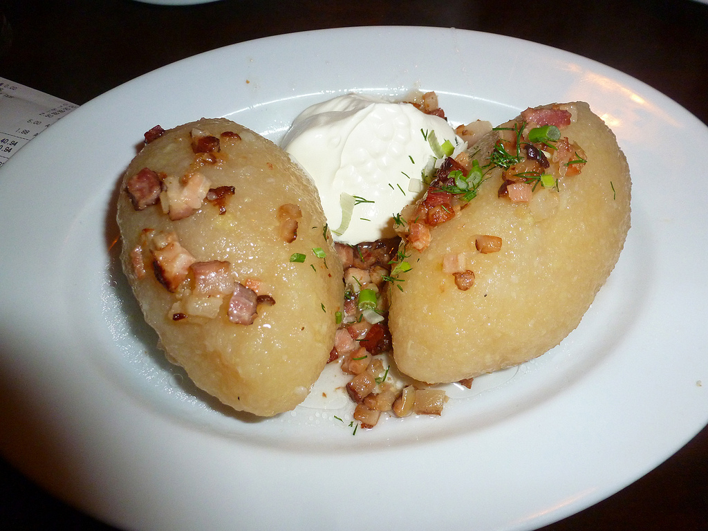

Main page
Cepelinai (Lithuanian Potato-Meat Dumplings)

Cepelinai (Lithuanian Potato-Meat Dumplings) recipe
Lithuanian potato-meat dumplings are known as zeppelins or cepelinai because of their shape. These hearty and rich dumplings take some time to make, but they are well worth the effort. Don't be intimidated by the recipe as it has a few steps in order to make each component, including the filling, the dumpling, and the gravy.
The potatoes for cepelinai are prepared in two ways—raw potatoes, which are peeled and grated, and then cooked potatoes, which are peeled, boiled, and riced. A potato ricer is a handy and useful tool to have to prepare them.
The national dish of Lithuania, cepelinai are best served and eaten as soon as made. The cooked dumplings are hard to store, and are best piping hot and covered with hot gravy.
Ingredients
For the Meat Filling:
- 1 pound ground pork, or an equal mix of pork, beef, and veal
- 1 medium onion, peeled and finely chopped
- 1 1/2 teaspoons salt
- 1/4 teaspoon freshly ground black pepper
- 1 large egg, beaten
For the Dumplings:
- 8 large Idaho potatoes, peeled for ricing raw
- 2 large Idaho or Russet potatoes, about 1 1/2 pounds, peeled, boiled, and riced
- 1 medium onion, finely grated
- 1 1/2 teaspoons salt, more as needed
- 1 tablespoon cornstarch
For the Gravy:
- 1/2 pound bacon, diced
- 1 large onion, coarsely chopped
- 1 cup sour cream
- Freshly ground black pepper, to taste
- 1 to 2 tablespoons milk, as needed
Steps
Make the Meat Filling
- In a large bowl, mix together ground meat, finely chopped onion, the salt, a few grinds of pepper, and the egg until well combined.
- Cover and refrigerate until ready to use.
Make the Dumplings
- Fit your food processor with the smallest hole grating disc. Cut the potatoes so they will fit into the food chute of your food processor.
- Feed the quartered pieces of potato through the food chute to be grated.
- The raw potatoes are grated very finely so they form a smooth purée.
- It is important that all of the liquid be removed from the potatoes. Place the potato pulp in a muslin cloth or cheesecloth and wring it dry over a bowl to catch the water and potato starch (which you will use).
- Carefully dispose of the water from the potatoes which collected when they were wrung dry. Make sure to leave the potato starch sediment at the bottom of the bowl.
- Remove the squeeze-dried potatoes from the cloth and transfer to a bowl with the reserved potato starch.
- Add the cooked riced potatoes, grated onion, and the salt, more to taste. Mix well.
- To form the zeppelins, take about 1 cup of dumpling mixture and pat it flat in the palm of the hand.
- Place 1/4 cup or more of meat mixture in the center and, using slightly dampened hands, fold the potato mixture around the meat into a football shape, making sure it is sealed well.
- Line up the shaped cepelinai until they have all been formed before starting to boil them.
Cook the Dumplings
Carefully lower dumplings (in batches if necessary to prevent crowding) into salted, boiling water to which 1 tablespoon of cornstarch has been added (to prevent dumplings from falling apart).
Make sure water returns to the boil; reduce the heat to low and continue simmering until the filling is cooked through, 20 to 25 minutes.
- Remove dumplings with a slotted spoon or strainer, drain briefly on a clean dish towel and place on a heated platter.
Make the Gravy
- Gather the ingredients.
- While the dumplings are boiling, make the gravy. In a medium skillet, fry the bacon and chopped onion until tender.
- Drain and combine with sour cream and black pepper. Thin with 1 to 2 tablespoons milk if necessary.
- Ladle the gravy over the dumplings or pass the gravy at the table.
Tips
- If your cepelinai tend to fall apart, try adding a few tablespoons of dry potato starch to the potato mixture along with the reserved wet starch.
- A Lithuanian potato grater is an excellent option, but if you aren't able to find one, grate the raw potatoes with the smallest grater holes then pulse them in a food processor until smooth.
- Instead of cheesecloth or a dish cloth, use a nut milk bag to wring out excess water.
- Let the potato water settle for a few minutes before pouring it off—the pasty starch will remain in the bottom of the bowl.
- Starchy russets, aka Idaho potatoes, are the potato to use to make cepelinai.
- A potato ricer makes the preparation of the cooked potatoes much easier.